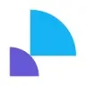
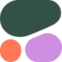
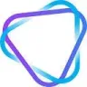

МолекулаАгрегаторы нейросетей
Молекула объединяет модели для текстов, изображений, видео и музыки. В одном аккаунте можно подобрать инструмент под этап работы, сохранить инструкции проекта и использовать готовые роли.
К задаче в МолекулеКлиентская поддержка: Проверьте ответы по собственной базе знаний. Настройте передачу сложных обращений человеку и доступ бота к данным.
Начните с описания обращения и утверждённого порядка действий. В Молекуле можно подготовить спокойный ответ, который собирает нужные детали и передаёт вопрос уполномоченному сотруднику.
Клиент сообщает, что комплект неполный, но не указал номер заказа. Подготовь ответ с просьбой прислать данные и фотографию упаковки. Компенсацию пока не обещай.

Молекула объединяет модели для текстов, изображений, видео и музыки. В одном аккаунте можно подобрать инструмент под этап работы, сохранить инструкции проекта и использовать готовые роли.
К задаче в МолекулеCentripe рассчитан на задачи, где нужно связывать действия в автоматизированный процесс. Ещё одно направление работы: готовить ответы на обращения клиентов.
Grain используют для задачи: готовить ответы на обращения клиентов. Ещё одно направление работы: обрабатывать голосовую запись.
HubSpot Breeze AI Assistant используют, чтобы исследовать тему и разбирать найденную информацию. Ещё одно направление работы: готовить ответы на обращения клиентов.
KUDO относится к инструментам, которые помогают готовить видеоматериалы для публикации. Ещё одно направление работы: готовить ответы на обращения клиентов.
Leah используют для задачи: связывать действия в автоматизированный процесс. Ещё одно направление работы: готовить ответы на обращения клиентов.
Lindy помогает связывать почту, встречи и задачи в агентный рабочий процесс. Польза определяется тем, насколько предсказуемо выполняются разрешённые действия.
LinkedRadar используют, чтобы готовить ответы на обращения клиентов. Ещё одно направление работы: организовывать поиск потенциальных клиентов.

В инструменте «Poised» можно сокращать материал до основных положений. Ещё одно направление работы: готовить ответы на обращения клиентов.

В инструменте «Revspot» можно готовить ответы на обращения клиентов. Ещё одно направление работы: готовить материалы о товарах и услугах.
Agentpro AI используют, чтобы связывать действия в автоматизированный процесс. Ещё одно направление работы: готовить ответы на обращения клиентов.

Cohere относится к инструментам, которые помогают переводить записанную речь в текст. Ещё одно направление работы: исследовать тему и разбирать найденную информацию.
Dot рассчитан на задачи, где нужно исследовать тему и разбирать найденную информацию. Ещё одно направление работы: готовить ответы на обращения клиентов.
Mira предлагает агентный способ выполнять задачи через Telegram. Перед работой нужно уточнить доступные действия и проверить, как передаются данные для выбранного сценария.
OpenClaw используют для задачи: выполнять задачи с веб-страницами. Ещё одно направление работы: готовить ответы на обращения клиентов.

Vapi предназначен для подключения голосовых агентов к приложению. При тестировании важны задержки разговора, правильное уточнение запроса и границы действий.
В инструменте «Alice» можно выполнять задачи с веб-страницами. Ещё одно направление работы: готовить ответы на обращения клиентов.
Amplemarket объединяет средства поиска потенциальных клиентов и подготовки обращений к ним. В набор входят поиск контактных данных, работа с социальными источниками и обогащение информации. Инструмент предназначен для команды продаж, где сведения о контакте используются при организации персонализированного взаимодействия с возможным клиентом.
Komo сочетает обычный поиск информации и генеративный ИИ в поисковой системе. Разговорный помощник дополняет рассмотрение запросов и результатов. Пользователь обращается к поисковым средствам вместе с ИИ-интерфейсом, связывая формулировку вопроса и работу с предоставленной информацией в рамках своего запроса.

Microsoft Copilot помогает обсуждать вопросы и готовить рабочие материалы. Личный помощник, Copilot в приложениях Microsoft 365 и средства разработки имеют разные условия и способы доступа к данным.
Smartlead помогает организовывать исходящие кампании в электронной почте и других каналах связи. В описании перечислены SMS и WhatsApp, а также Twitter. ИИ-функции относятся к работе с доставляемостью сообщений и репутацией отправителя, дополняя автоматизацию коммуникационных действий кампании.

Vic.ai используют для задачи: обрабатывать финансовые документы и записи. Ещё одно направление работы: готовить ответы на обращения клиентов.
Wysa используют для задачи: готовить ответы на обращения клиентов. Ещё одно направление работы: обрабатывать голосовые обращения.

Booke AI применяют при обработке бухгалтерских материалов. Автоматизация полезна для подготовки записей, но итоговые суммы и реквизиты остаются предметом проверки специалиста.
CodaMetrix относится к инструментам, которые помогают готовить ответы на обращения клиентов. Ещё одно направление работы: структурировать сведения о состоянии здоровья.

Dante AI относится к инструментам, которые помогают создавать основу сайта или приложения. Ещё одно направление работы: готовить ответы на обращения клиентов.
Highlight AI используют, чтобы сокращать материал до основных положений. Ещё одно направление работы: готовить ответы на обращения клиентов.
MeetGeek используют, чтобы готовить ответы на обращения клиентов. Ещё одно направление работы: готовить учебный материал и объяснения.
Pylon используют для задачи: готовить ответы на обращения клиентов. Ещё одно направление работы: собирать видео с цифровым ведущим.

В инструменте «Relevance AI» можно связывать действия в автоматизированный процесс. Ещё одно направление работы: готовить ответы на обращения клиентов.
Synthflow используют, чтобы связывать действия в автоматизированный процесс. Ещё одно направление работы: готовить ответы на обращения клиентов.
AutoLeap AIR рассчитан на задачи, где нужно готовить ответы на обращения клиентов. Ещё одно направление работы: обрабатывать голосовые обращения.

Botsheets связывает диалоговый интерфейс с таблицами Google Sheets. Такой подход подходит для сбора записей и ответов, основанных на содержимом таблицы.

Chatbase помогает создать агента, который отвечает по материалам организации. Помимо текстов базы знаний важно определить границы допустимых ответов и действий.
StackAI используют, чтобы писать и изменять программный код. Ещё одно направление работы: готовить ответы на обращения клиентов.

Superhuman представляет почтовый клиент с ИИ-сортировкой сообщений. В продукте предусмотрены отмена отправки и сведения о прочтении письма, а также рассмотрение данных социальных сетей. Эти функции дополняют работу с электронной перепиской и действия пользователя по управлению исходящими сообщениями.
Talview относится к инструментам, которые помогают связывать действия в автоматизированный процесс. Ещё одно направление работы: составлять задания и карточки для повторения.

В инструменте «Abacus.AI» можно готовить ответы на обращения клиентов. Ещё одно направление работы: использовать разные модели через общее рабочее пространство.
В инструменте «FastBots.ai» можно создавать основу сайта или приложения. Ещё одно направление работы: готовить ответы на обращения клиентов.

Grok объединяет диалог, поиск по вебу и X, работу с материалами и создание контента. Для исследования полезно отдельно проверять найденные источники и собственные выводы модели.
LibreChat используют для задачи: исследовать тему и разбирать найденную информацию. Ещё одно направление работы: готовить ответы на обращения клиентов.
Octolens используют для задачи: исследовать тему и разбирать найденную информацию. Ещё одно направление работы: готовить ответы на обращения клиентов.

Quickchat AI предназначен для создания корпоративных диалоговых помощников без программирования. Сервис поддерживает общение на разных языках и ориентирован на вопросы клиентов, продажи, кадровые задачи и сведения о продуктах. Его основная роль состоит в настройке помощника под выбранный рабочий контекст компании.
ScribeMD помогает подготовить медицинскую запись по содержанию консультации. Документ необходимо проверить врачу, особенно имена, назначения и смысл описанных симптомов.
В инструменте «SuperAGI» можно связывать действия в автоматизированный процесс. Ещё одно направление работы: готовить ответы на обращения клиентов.

Altered Studio используют для задачи: готовить ответы на обращения клиентов. Ещё одно направление работы: работать с синтезированной голосовой партией.

В инструменте «Circleback» можно готовить ответы на обращения клиентов. Ещё одно направление работы: превращать материалы в рабочие заметки.

Claap рассчитан на задачи, где нужно готовить ответы на обращения клиентов. Ещё одно направление работы: обрабатывать голосовые обращения.
Страница 1 из 2